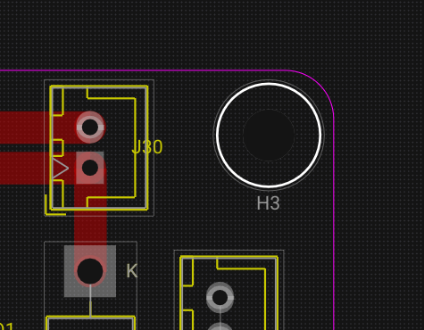
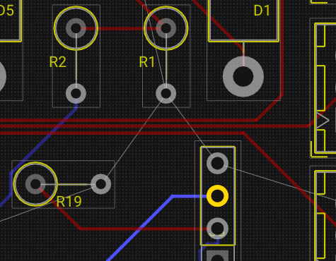

Routing Traces¶
Trace routing connects pads on the PCB, enforcing electrical and design-rule constraints. This page covers the routing workflow, collision detection, trace editing, vias, holes, and routing helpers.
Routing Mode¶
Select Route Trace from the PCB toolbar (or press X).
Drawing a trace¶
- Click on a pad or existing trace segment to start routing.
- The trace follows the mouse with 45° helper points automatically computed.
- Left-click to confirm each vertex (corner).
- Click on the destination pad to finish the trace, or right-click / press Esc to end.
| Action | Input |
|---|---|
| Start trace on a pad | Left-click |
| Add vertex | Left-click |
| Finish trace on pad | Left-click on target |
| Cancel current trace | Right-click or Esc |
| Switch layer (place via) | V |
Trace data¶
Each trace stores:
| Property | Description | Example |
|---|---|---|
id |
Unique trace identifier | trace_42 |
netName |
Electrical net this trace belongs to | GND, SDA |
layer |
Copper layer ID | F.Cu, B.Cu |
width |
Trace width in board units (mils) | 10 |
points |
Ordered polyline vertices | World coordinates |
Collision and Clearance Checks¶
WireFrame checks clearance in real time during routing:
| Check | Against |
|---|---|
| Trace-to-trace | Other traces on the same layer (width + clearance) |
| Trace-to-pad | Footprint pads on the same layer |
| Trace-to-via/hole | Via and hole drill areas |
| Trace-to-outline | Board edge (Edge.Cuts) |
| Trace-to-zone | Copper zone boundaries |
Routing helpers:
- Red warning indicator appears if the route gets too close to another copper element.
- The system prevents completing segments that violate clearance rules.
Editing Existing Traces¶
| Operation | How | Command |
|---|---|---|
| Move entire trace | Select + drag | An undoable move command |
| Drag a segment | Click and drag one segment | Keeps adjacent segments constrained |
| Delete trace | Select + Del | Delete command (marks net dirty) |
Net rebuild
Deleting or modifying traces marks the affected nets as dirty. The ratsnest is automatically recomputed to show any broken connections.
Vias and Layer Changes¶
During routing¶
- While routing on F.Cu, press V.
- A via is placed at the current cursor position.
- The active routing layer switches to B.Cu.
- Continue routing on the new layer from the via point.
Via properties¶
| Property | Description | Default |
|---|---|---|
id |
Unique via ID | Auto-generated |
position |
Board coordinates | Cursor position |
netName |
Net inherited from connected trace | Same as trace |
diameter |
Via copper diameter | From Design Rules |
drill |
Drill hole diameter | From Design Rules |
Manual via placement¶
- Select the Draw Via tool.
- Click on the board to place a via.
- Assign the net in the Properties panel if needed.
Mechanical Holes¶
Use the Place Hole tool to add non-electrical holes:
- Click on the board to place a hole.
- Set parameters in the Properties panel:
| Property | Description |
|---|---|
diameter |
Hole diameter (e.g., 3.2 mm for M3 screws) |
plated |
Whether the hole has copper plating |
netName |
Net name if plated (e.g., GND for grounding) |

Sticky Endpoints and Advanced Dragging¶
WireFrame maintains smart connections during drag operations:
- Moving a via: traces attached to the via remain connected — endpoints follow the via position.
- Moving a footprint: connected trace endpoints adjust to maintain pad connections via trace endpoint update.
- StickyEndpoint structures ensure trace endpoints stay snapped to pads or vias during selection moves.
Autorouting Helpers¶
WireFrame provides several routing assistance functions:
| Function | Description |
|---|---|
calculate45DegreeRoute |
Generates clean 45° path between start and end points |
applyMitering |
Rounds corners with mitering arcs |
glossTrace |
Simplifies trace geometry by removing redundant vertices and smoothing short zig-zags |

See Also¶
- Footprints & Placement — place the footprints that traces connect.
- Layers & Views — manage layer visibility during routing.
- Zones & Planes — copper fills that interact with traces.
- DFM & DRC — check trace clearances and widths after routing.